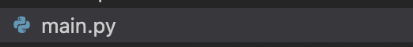
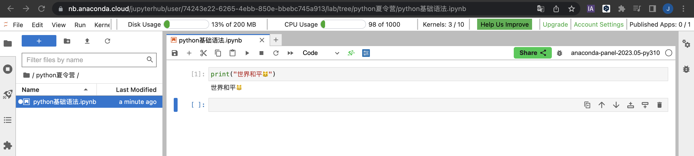

2023 + 40906113Python文件的后缀为 .py

比如在jupyterlab，在终端或者vscode中输入代码
如图，Shift + Enter执行代码块

在终端中，输入python进入python解释器后，即可运行python代码
我们可以写一个简单的表达式，在编程中，表达式是一段产生值的代码，类似计算机功能，例如
2023 + 40906113除了输出值外，还有另外一种表达式，比如查看是否 9 大于 1？
9 > 1True上面这个表达式对9和1的大小进行了判断。因为9 > 1，所以，程序返回了True；反之，如果我们编写1 > 9，则会返回False。在这里，True和False统称为布尔值，在之后的数据类型课程中，我们会详细地对其进行介绍。
写代码总少不了报错。假如我的是空值呢？
9 > SyntaxError: invalid syntax (1639543893.py, line 1)我们进行了一个比较运算，但是只填入了一个值。这时 程序就报错了。终端里显示我们的代码出现了一个语法错误，报错提示中的SyntaxError在编程中代表着语法错误。就像自然语言中的语法一样，Python作为一门编程语言，也具有自己的语法。在接下来的日子里，我们会带你详细学习。
在Python中，变量用于存储和表示数据。变量赋值是将一个值与一个变量关联起来的过程。通过变量，我们可以在程序中存储和操作数据。
在Python中，变量的命名需要遵循以下规则：
在Python中，使用等号（=）进行变量赋值操作。等号 ( = ) 运算符左边是一个变量名,等号 ( = ) 运算符右边是存储在变量中的值
下面是一个例子，将数字5赋值给变量x：
x = 5一旦变量被赋值，我们可以在程序中使用它来表示和操作存储的值。
下面是一个例子，使用变量x计算其平方并打印结果：
x = 5
square = x * x
print(square)25在程序中，我们可以多次为同一个变量赋值，新的赋值将覆盖之前的值。
下面是一个例子，演示变量的重新赋值：
x = 5
print(x) # 输出：5
x = 10
print(x) # 输出：10题型一
将字符串”Hello, Python!“赋值给变量message，然后打印出变量的值。
message = "Hello, Python!"
print(message)Hello, Python!题型二 将变量的值用于字符串拼接，使用input()函数接收输入值，使用字符串的格式化功能，将这变量的值拼接到一句话中。最后，通过print()函数将句子打印输出。
# 用户输入姓名和年龄
name = input("请输入您的姓名：")
age = input("请输入您的年龄：")
# 创建自我介绍的句子并打印输出
introduction = f"我的名字是{name}，今年{age}岁。"
print(introduction)我的名字是Jack，今年18岁。在Python中，注释用于对代码进行解释和说明，对于其他人（包括自己）来理解代码的作用和意图非常有帮助。注释是在代码中添加的文本，Python解释器会忽略它们。
在Python中，使用#符号开始的文本被视为单行注释。在#后面的所有内容都被视为注释，不会被执行。
下面是一个例子，演示如何使用单行注释：
# 这是一个单行注释
print("Hello, World!") # 打印输出文本Hello, World!上述代码中，第一行是一个注释，用于对代码的目的进行解释。第二行是打印输出语句，不受注释的影响。
在Python中，使用三个引号（双引号或单引号都可以）包围的文本被视为多行注释。多行注释可以跨越多行，并且可以包含多个段落。
下面是一个例子，演示如何使用多行注释：
"""
这是一个多行注释的示例。
它可以跨越多行，并且可以包含多个段落。
以下是代码的主要功能：
- 输入用户的姓名
- 打印欢迎消息和姓名
"""
name = input("请输入您的姓名：")
print("欢迎，" + name + "!")欢迎，jack!如果想一次性注释多行的话，鼠标选取后，按ctl+/进行注释
在Python中，行用于分隔不同的代码语句，而缩进用于表示代码块（例如条件语句、循环等）的范围。
每一行都包含一个完整的代码语句或表达式。下面是一个例子：
print("Hello, world!")Hello, world!上述代码中，print(“Hello, world!”)是一行代码，用于输出字符串”Hello, world!“。
在Python中，缩进通过空格或制表符来实现，用于表示代码块的开始和结束。通常使用4个空格作为标准缩进。
缩进造成的错误，应该名列 Python 错误榜第一
下面是一个例子，演示如何在代码块中使用缩进：
if x>0:
print("x是正数")
print("干得漂亮！")
else:
print ("x是负数")
print ("可惜哇嗷！") x是正数
干得漂亮！上述代码中，if语句和else语句是两个代码块，它们的范围由缩进表示。在if代码块中，两个print语句都会在条件满足时执行。在else代码块中，同样有两个print语句。（大家可以自己修改下x范围）
养成良好编码习惯：
保持一致的缩进：使用相同数量的空格或制表符进行缩进，并在整个代码中保持一致。这有助于提高代码的可读性；
使用合适的缩进级别：根据代码逻辑嵌套关系，选择适当的缩进级别。通常建议每个缩进级别使用4个空格；
使用注释：在关键地方添加注释，解释代码的目的和功能。注释可以提高代码的可读性和可维护性；
注意行的长度：尽量将每行代码控制在适当的长度范围内，通常推荐不超过80个字符。可以使用换行符（）或括号来换行。
使用反斜杠（\）将一行代码分成多行。下面是一个例子：
total = 1 + \
2 * \
3
print(total)7上述代码中，total变量的值是1+2*3，通过使用反斜杠在多行中编写，使代码更易读。
另一种方式是使用括号（圆括号、方括号、花括号）来隔行编写多行语句。下面是一个例子：
total = (1 +
2 *
3)
print(total)7